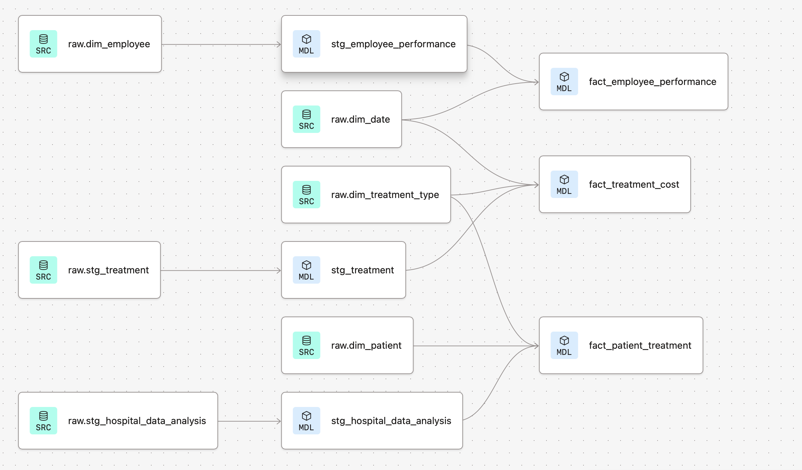
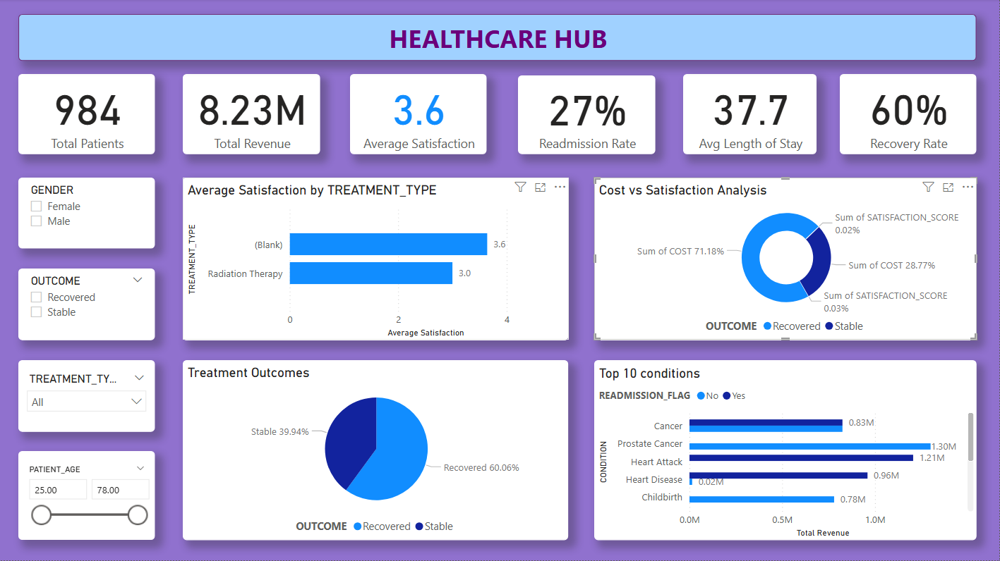
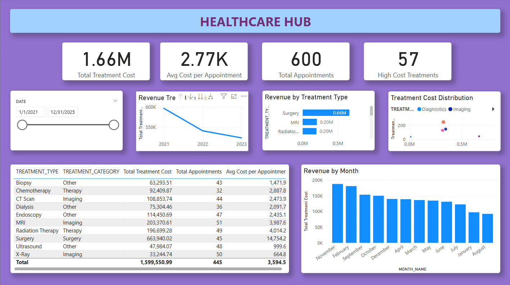
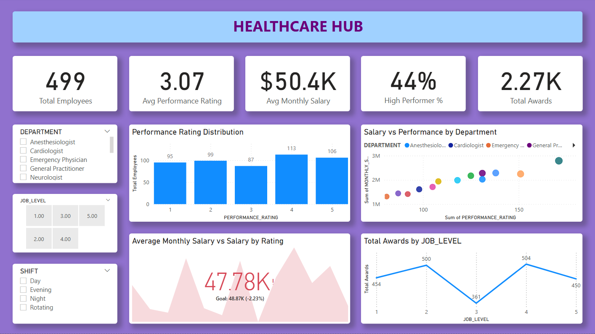
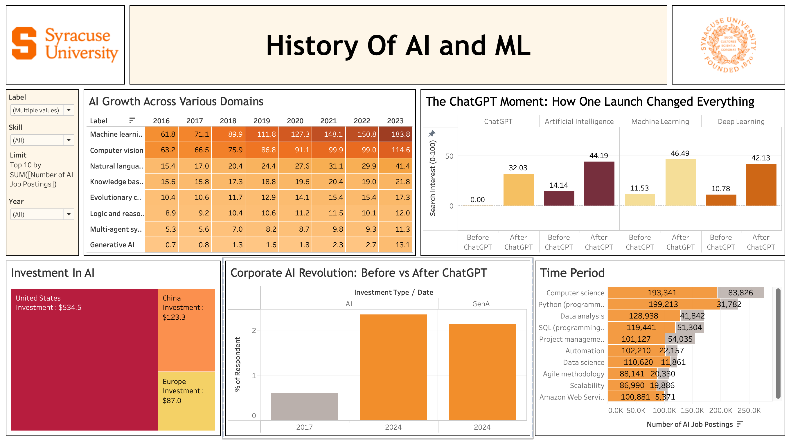
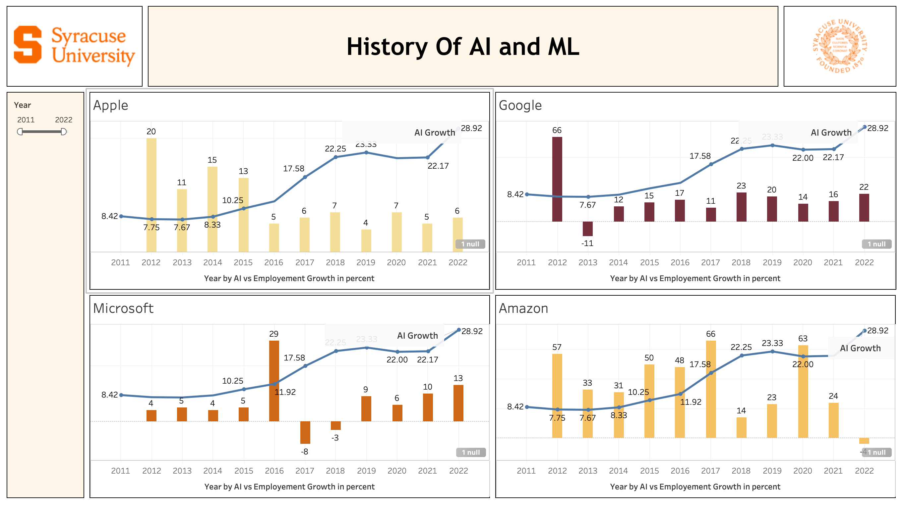
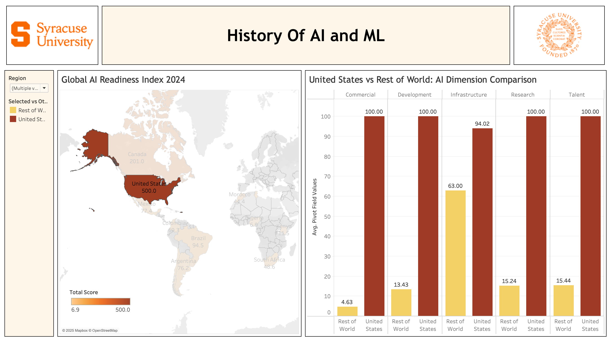

FEATURED PROJECTS
NYC Taxi: Scalable Data Engineering Pipeline
Processed 5.7M+ NYC taxi records using PySpark, Snowflake, and dbt to produce analytics-ready and ML-ready Gold-layer datasets, exposed via FastAPI services.
Healthcare Hub: End-to-End Analytics Engineering
Designed a Snowflake + dbt healthcare dimensional warehouse using Kimball star schema, powering Power BI dashboards with 50% lower audit effort.
Energy Hub: Predictive Grid Reliability
Built an energy demand forecasting system with 93.16% SVM accuracy and 32% surge climate simulation insights for grid infrastructure planning.
Crime Detection in Syracuse: Public Safety Intelligence
Deployed a Flask-based crime intelligence system with 95% accuracy, Tableau dashboards for 50+ areas, and built-in ethical AI safeguards.
Additional Projects
History of AI and ML
Analyzed AI/ML market evolution (2011–2024) with Tableau — mapping $534.5B US investment, ChatGPT impact, and global AI readiness across 8 domains.
Flight Delay Prediction (6M+ Records)
Classified flight delays across 6M+ records using Random Forest, achieving 92.11% accuracy with departure delay identified as the leading arrival indicator.
Movie Metrics: Box Office Revenue Prediction
Predicted box office revenue for 5,000+ films using regression modeling — identifying budget and user reviews as the strongest financial drivers.
NYC Taxi: Scalable Data Engineering Pipeline
Problem
Raw NYC taxi data arrives as high-volume, unstructured records with inconsistent formats and invalid entries — making it unusable for analytics or machine learning without a reliable transformation layer. There was no scalable pipeline to convert this raw data into trusted, analyst-ready datasets at production scale.
Approach — Medallion Architecture
- 🥉 Bronze Layer (Raw Ingestion): Ingested raw NYC taxi trip records directly into Snowflake without transformation, preserving source fidelity for auditability and reprocessing.
- 🥈 Silver Layer (Validated & Cleansed): Used PySpark for distributed parallel processing across 5.7M+ records — applied validation rules, removed invalid entries, standardized schemas, and resolved quality issues.
- 🥇 Gold Layer (Analytics & ML-Ready): Implemented modular dbt transformation models producing curated datasets optimized for downstream analytics and machine learning — aggregated views for demand by zone, fare distribution, distance analysis, and pickup trends.
- FastAPI Services: Exposed curated Snowflake Gold-layer tables through FastAPI endpoints, enabling real-time analytics dashboard consumption.
Results
- Successfully processed and transformed 5.7M+ records through a fully automated ELT pipeline.
- Achieved systematic data quality enforcement at Silver layer, significantly reducing invalid record proportion in downstream datasets.
- Produced analytics-ready and ML-ready Gold datasets supporting taxi demand, fare, distance, and pickup trend analysis.
- Delivered real-time data accessibility via FastAPI services for dashboard consumption.
Impact
Demonstrates production-grade Data Engineering competency — scalable distributed processing, layered architecture, data governance, and API-first data delivery. The Medallion pattern implemented here is directly applicable to any enterprise data platform. Reflects the core thesis of the Data Engineering track: great analytics depends on great infrastructure.
Tech Stack
Healthcare Hub: End-to-End Analytics Engineering
Problem
Manual SQL transformations across fragmented healthcare data sources produced "spaghetti code," inconsistent metrics, and no unified view of treatment outcomes, revenue, or employee performance. There was no "Single Source of Truth" — every dashboard defined key metrics differently.
Approach — Analytics Engineering with dbt & Snowflake
- Dimensional Modeling: Designed a Snowflake dimensional warehouse using the Kimball star schema — conformed dimensions (Date, Product, Store) enabling seamless drill-across reporting via the Kimball Bus Matrix.
- dbt Transformation Layer: Built modular Staging models (clean raw data) and Mart models (final fact tables), switching from 1,000-line stored procedures to maintainable, version-controlled SQL.
- Automated Data Quality: Implemented
dbt testsfor unique keys and non-null values — reducing dataset audit effort by 50% before data reached any dashboard. - Power BI Dashboards: Delivered standardized analytics datasets powering three interconnected dashboards for healthcare operational insights.
Results
- 50% reduction in manual auditing time through automated dbt data quality checks.
- 3x more maintainable pipeline — modular dbt models replaced monolithic stored procedures.
- Unified metrics for 984 patients, $8.23M revenue, 499 employees across all dashboards.
Impact
Demonstrates analytics engineering thinking — translating fragmented raw data into governed, reusable dimensional models that power consistent, trustworthy reporting across an entire organization.
Data Architecture & Power BI Dashboards

dbt DAG: complete data lineage from raw sources through staging models to final fact tables.

Patient Treatment Dashboard: 984 patients, $8.23M revenue, 3.6 avg satisfaction.

Treatment Cost Dashboard: $1.66M total cost, 600 appointments, revenue 2021–2023.

Employee Dashboard: 499 employees, 3.07 avg performance rating, $50.4K avg monthly salary.
Tech Stack
Energy Hub: Predictive Consumption & Grid Reliability
Problem
South Carolina's energy grid faces catastrophic failure risk during peak July heatwaves. As global temperatures rise, residential cooling demand increases exponentially. Energy companies lacked a data-driven model to quantify this "Temperature Sensitivity" or simulate worst-case climate scenarios for proactive grid planning.
Approach — End-to-End ELT + Predictive Pipeline
- Multi-Source ELT Pipeline: Integrated housing characteristics, weather conditions, and energy usage datasets into Snowflake via
arrowandparquet— standardized by County and Building ID. - dbt ML-Ready Feature Store: Generated ML-ready datasets using dbt transformations, reducing feature engineering effort by 35%.
- SVM Regression (RBF Kernel): Modeled non-linear relationship between dry-bulb temperatures and cooling system intensity in R.
- Climate Simulation (+5°): Simulated worst-case scenario of a 5° temperature increase to stress-test grid capacity.
- R Shiny & Power BI Dashboards: Interactive dashboards for stakeholders to manipulate temperature parameters and visualize real-time demand shifts for load-shedding protocols.
Results
- 93.16% accuracy on test set; RMSE of 0.708 — exceptional stability for utility-scale planning.
- Predicted a 32% exponential surge in peak energy demand per 5° temperature rise.
- Total forecasted peak load of 894.39 KWH under elevated heat conditions.
- Identified pre-1990 residential units as disproportionate contributors to peak loads — actionable case for targeted appliance modernization.
Impact
Provides energy infrastructure planners with data-driven scenario intelligence — enabling proactive load-shedding decisions, appliance modernization programs, and grid hardening strategies before climate events occur.
Key Analysis

Model validation: actual vs predicted energy usage — 93.16% accuracy with minimal outliers.

Efficiency gap: pre-1990 units consume disproportionately more energy per sq ft.

Climate simulation: energy consumption spikes (blue) vs baseline (red) under +5° temperature increase.
Tech Stack
Crime Detection in Syracuse: Public Safety Intelligence System
Problem
Law enforcement agencies often react to crime rather than prevent it — resource allocation is based on intuition rather than data. Syracuse needed a proactive intelligence system to identify high-risk areas and time windows in advance, enabling optimized patrol routing and data-driven resource deployment.
Approach
- Multi-Model Evaluation: Conducted rigorous EDA on 9,100+ crime records (2023–2024), then evaluated SVM, Random Forest, and XGBoost classifiers. Best model deployed at 95% accuracy across 50+ geographic areas.
- Temporal Forecasting: SARIMA time-series models predicting crime trend patterns — R² of 0.86.
- Spatial Risk Classification: Random Forest achieving 88.6% accuracy categorizing areas by risk level (Low / Medium / High).
- Flask API Deployment: Production-ready Flask API enabling real-time crime risk predictions as a decision-support tool for law enforcement.
- Tableau Crime Density Dashboards: Visualizations across 50+ areas for stakeholder communication and patrol planning.
- SMOTE Balancing: Improved model performance by 15% on minority crime classes.
Results
- 95% classification accuracy — best-in-class across SVM, Random Forest, and XGBoost models.
- Interactive Folium crime hotspot map deployed with predicted 2025 risk zones.
- Tableau dashboards covering 50+ geographic areas enabling geographic crime density analysis.
⚖️ Ethical Safeguards — A Real Differentiator
- Algorithmic Bias Testing: Fairness evaluation built into model assessment to prevent feedback loops and over-policing of marginalized communities.
- Privacy-First: Data anonymization and aggregation practices applied throughout.
- Decision-Support, Not Decision-Making: Model outputs are one input among many — human judgment remains central.
- Community Transparency: Stakeholder governance recommendations to prevent stigmatization and ensure accountable deployment.
Impact
Shifts public safety from reactive to proactive and data-driven — with ethical guardrails ensuring responsible deployment. Demonstrates that strong ML performance and responsible AI design are not trade-offs.
Interactive Crime Hotspot Map — 2025 Predictions
Click zones to see predicted risk levels. 🟢 Very Low | 🟡 Low | 🟠 Medium | 🔴 High Risk
Tech Stack
History of AI and ML: Comprehensive Market Analysis
Project Overview
Developed an interactive Tableau dashboard analyzing the evolution of AI and ML from 2011 to 2024, tracking how these technologies became fundamental drivers of economic growth, corporate strategy, and global competitiveness.
Key Analysis Dimensions
- AI Domain Growth (2016–2023): ML led with growth from 61.8 to 183.8 job postings; Generative AI surged 0.7 to 13.1 post-2022.
- ChatGPT Impact: AI search interest +212%, ML +303%, Deep Learning +291% post-November 2022.
- Global Investment: US at $534.5B, China ($123.3B), Europe ($87.0B).
- Global AI Readiness: US score 500.0 — 21.6x Commercial, 7.4x Development, 6.6x Research advantages.
Tableau Dashboards

AI domain growth heatmap, ChatGPT moment analysis, global investment treemap.

Tech giants AI job growth vs overall employment (Apple, Google, Microsoft, Amazon 2011–2022).

Global AI readiness map with US leadership (500.0) and five-dimensional comparative analysis.
Tech Stack
Flight Delay Prediction (6M+ Records)
Goal
Classify and predict flight delays across 6M+ aviation records to identify leading indicators and optimize logistics decision-making.
Technical Solution
- Scale: Cleaned and processed 6,073,466 rows — engineered
RouteandIs_Delayfeatures. - EDA: Identified delay hotspots at ORD and ATL; seasonal peaks in June and December.
- Random Forest: 92.11% accuracy; Departure Delay confirmed as leading Arrival Delay indicator.
Key Insights

Monthly trends: temperature vs flight delays — peak delays in summer months.

Feature importance: weather conditions dominant predictor.
Tech Stack
Movie Metrics: Predictive Modeling for Box Office Revenue
Goal
Analyze the IMDb 5000 dataset to identify key financial drivers and predict gross box office revenue for feature films.
Technical Solution
- Data Refinement: Cleaned 5,000+ film records — handled missing
grossandbudgetvalues. - Feature Engineering: Built a "Social Media Impact" metric aggregating director and actor Facebook likes.
- Key Finding: Budget and User Reviews are the strongest revenue predictors; star power alone does not guarantee returns.
Key Insights

Audience scores rising 2020–2023 while critic scores remain stable.

Medium-sized casts (63–65%) outperform in both critic and audience reception.